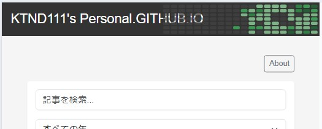

今回は私のGitHub Pagesサイトにコントリビューショングリッド（あの緑色のブロックマップ、通称「草」）を実装した経験を共有したいと思います。このプロジェクトでは、静的サイトの制約の中で動的なデータを扱うという挑戦に直面し、様々な技術的課題を乗り越えました。「制約の中での創造性」 をテーマにして実装プロセスを振り返ります。
結果として、140日分のコントリビューション履歴をヘッダーに表示することができ、殺風景なサイトに少し色がつきました。
まず最初に試したのは「GitHub APIを直接使ってコントリビューションデータを取得する方法」でした。しかし、この方法では2020年頃の古いデータしか取得できないという問題に直面し、結局狙ったものにはなりませんでした。
調査を進めた結果、GitHub GraphQL APIを使えば最新のコントリビューションデータが取得できることがわかりましたが、このAPIを使用するにはPersonal Access Token (PAT)が必要です。
あまりフロントエンドに明るくない当方ですが、 静的サイト上にPATのような機密情報を埋め込むことはセキュリティ上かなりまずい ということは分かります。なんとか静的サイトに実装する方法として考えたところ・・・
最終的に選んだのは、Azure Functionsを使ったソリューションでした。具体的には以下2つのFunctionを実装しています。
GitHub GraphQL APIは初で、クエリの書き方やデータ構造に戸惑いつつも少しずつ実装していきました。
# GitHub GraphQLクエリ例
query {
user(login: "ktnd111") {
contributionsCollection {
contributionCalendar {
totalContributions
weeks {
contributionDays {
contributionCount
date
}
}
}
}
}
}
もう一つの挑戦は、API経由でGitリポジトリにコミットする方法を実装することでした。通常のFunctionの実装とは異なり、GitHub APIを使ってプログラム的にリポジトリを更新する仕組みを作る必要がありました。
// Azure FunctionからGitHubリポジトリにファイルをコミットする例
var client = new GitHubClient(new ProductHeaderValue("UpdateContributions"));
client.Credentials = new Credentials(_config["GitHubToken"]);
// リポジトリ情報
var owner = "ktnd111";
var repo = "ktnd111.github.io";
var path = "data/contributions.json";
// 現在のファイル情報を取得（SHA値が必要）
var existingFile = await client.Repository.Content.GetAllContents(owner, repo, path);
var sha = existingFile.FirstOrDefault()?.Sha;
// ファイルを更新
var updateRequest = new UpdateFileRequest(
message: "Update contributions data",
content: Convert.ToBase64String(Encoding.UTF8.GetBytes(jsonContent)),
sha: sha
);
await client.Repository.Content.UpdateFile(owner, repo, path, updateRequest);
コスト効率と性能を考慮し、次のようなデータフローを設計しました。
この方法により、ページ表示ごとにFunctionを実行することなく、常に最新のデータを表示できるようになりました。
表示ごとにAPIを叩いてしまうとF1プランとはいえ課金されてしまうため、1日1回のAPIコールになるよう意識して設計しました。（お試しで作成したBLOBなんかは放置してても1日10円ぐらいかかってますし、なるべくコストをかけずに。）
実装過程で最も苦労したのは、ヘッダーをコンポーネントとして動的に読み込む際に発生した問題でした。サイトではloadComponentメソッドを使ってヘッダーを読み込んでいましたが、このメソッドがヘッダー内のJavaScriptを自動的に実行してくれないことに気づきました。
解決策として、コンポーネント読み込み完了後に明示的にgithub-contributionsメソッドを呼び出す実装に変更。
// コンポーネントを読み込む関数
// 既存のloadComponent部分
document.addEventListener('componentsLoaded', () => {
// header-component が読み込まれた後、明示的にコントリビューショングリッドを初期化
if (typeof renderContributionGrid === 'function') {
renderContributionGrid();
} else {
// github-contributions.js が読み込まれていない場合は読み込む
const script = document.createElement('script');
script.src = '/js/github-contributions.js';
script.onload = function() {
if (typeof renderContributionGrid === 'function') {
renderContributionGrid();
}
};
document.head.appendChild(script);
}
});
開発過程でもう一つ苦労したのは、GitHub Pagesに依存した実装のため、完全な動作検証が実際のデプロイ環境でしか行えない点でした。コミット→CI処理→デプロイ完了というサイクルを経なければ実際の動作が確認できず、開発効率が低下する場面もありました。
ここはまた今度開発用サーバーを立ち上げてなんとかしようと思っています。
このプロジェクトから得られた主な学びは以下の通りです：
最終的に完成したコントリビューショングリッドは、GitHub Pagesサイトのヘッダーに美しく組み込まれ、140日分の活動履歴を一目で確認できるようになりました。黒いヘッダー背景に緑色のグラデーションで表現されたアクティビティグリッドは、サイト全体に視覚的な彩りを加えています。
静的サイトでの制約の中、動的なデータを表示するという挑戦は、多くの学びと創造的な解決策をもたらしました。「制限があるなかで色々試行錯誤する」というのが、エンジニアリングの本質の一つだと再認識できた貴重な経験となりました。
この実装が、同様の課題に取り組む方々の参考になれば幸いです。またコントリビューショングリッドを目に見える場所に置くことで、GitHub活動のモチベーション向上にも確かに効果がありました。
IT業界に、ITエンジニアに貢献する企業
ONE WEDGEはServerlessシステム開発を中核技術としてWeb系システム開発、AWS/GCPを利用した業務システム・サービス開発、PWAを用いたモバイル開発、Alexaスキル開発など、元気と技術力を武器にお客様に真摯に向き合う価値創造企業です。
ONE WEDGE株式会社